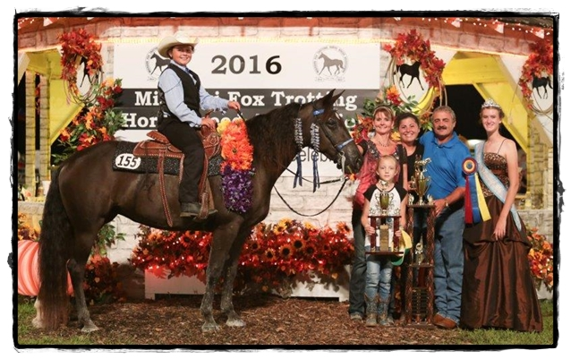
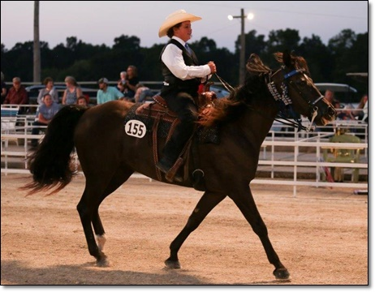
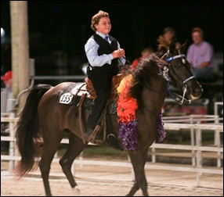
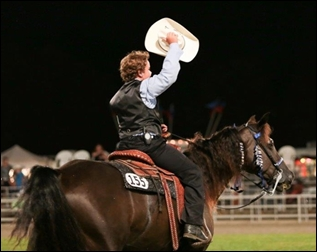
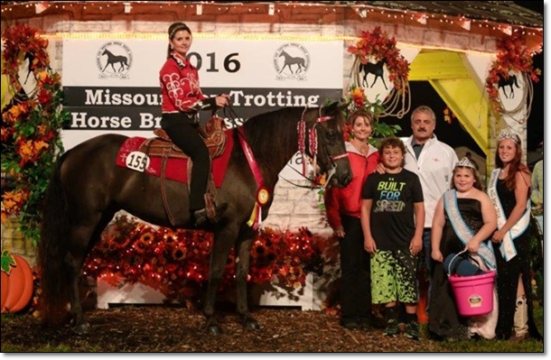

2016 Show
Jolley Foxtrotters, home of Missouri Fox Trotting Horses in southwest Missouri.
2016 Show


Grand Derby
2016 Reserve Ladies 3yrd old world champion
Owners Jolley Foxtrotters


Super Mario
2016 Senior Stallion Amateur World
Grand Champion
Owner: Kent Winegar
11 and Under Class World Grand Champion

Kolbey Ballowe and Midnight Mandy



2016 Reserve Amateur World Grand Champion

Midnight Mandy and Sharon Jolley-Ballowe
My Little Whiskey Girl -- Pony Classes


Pony Trail Class